Alltag in Kalimantan
Wo?
1955-1959
Zurück
Weiter
Menne-Indonesia
Ein Schiff nach Jakarta
Am Fluss
Totenfeste bei den Dayak
Intan: Diamanten
Alltag in Kalimantan
Garten mit Bananen
Vor dem Arzthaus in ...
Klein Kläuschen friert
Praxis und Wohnung im ...
Küche in Sampit
Häuslebauer unter sich
Pasar in Sampit
Zuckerrohr-Probe
Mangaverkäufer mit ...
Sampit-Martapura einfach
Flugplatz Ulin - Tor zur ...
Der Markt von Banjarmasin
Oplets, Zahnweh und ...
Die Becak
Hausaufgaben selbdritt
Ballontrauben-Werkstatt
Dieter aus Martapura
Peter, geboren in ...
Sonntagskaffee mit Baby
Sisri füttert
Der Friseur, der Haji war
Sinterklaas in der SNO
Zimmern für den ...
Ein Fort am Meer
Nur für Rückenschwimmer
Nationalsport Badminton
Alltag in Java
Nationalfeiertag
Haji Saleh war in Mekka
Beim Doktor
Ferien in Java
Ferien in Bali
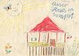
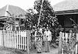
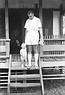
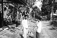
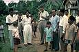
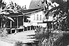
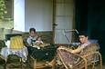
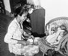
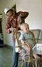
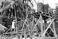
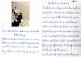
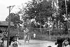
Youtube: Javanisches Tagebuch 1958-1962